WorkBuddy是腾讯推出的桌面AI智能体，能直接操作电脑里的各类本地文件。写文档、做表格、生成PPT，或者做数据分析，都可以让它直接交付能用的成品。
不过最近不少小伙伴反馈，用过之后觉得没那么顺手。我自己觉得，要把WorkBuddy用好，除了安装skill，提示词怎么写也很关键。
所以这次把这份68页的学习资料分享给大家，希望能帮大家把WorkBuddy用起来。下班后抽点时间，照着这68页的内容挨个动手练一遍，你也能用得很熟练。
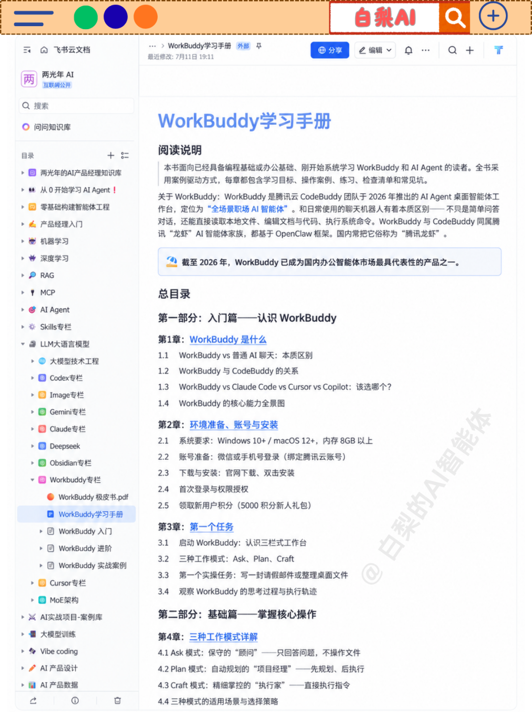
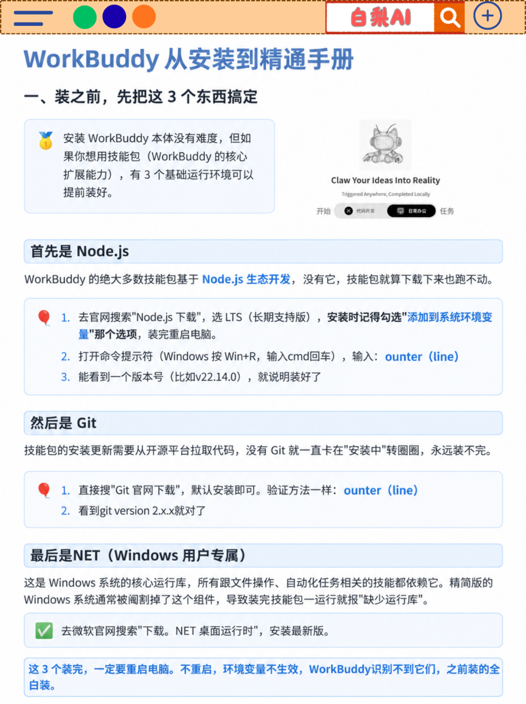
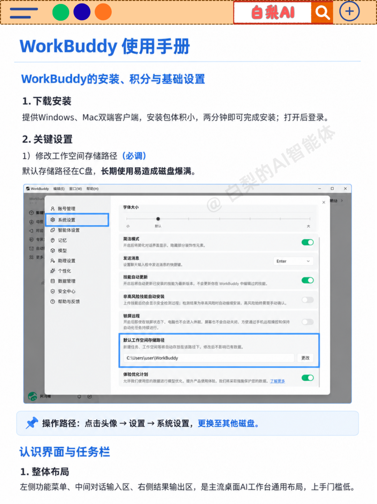
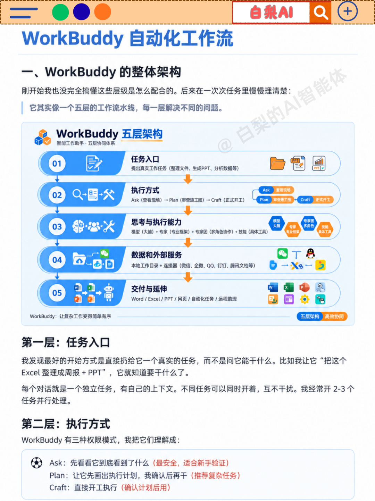
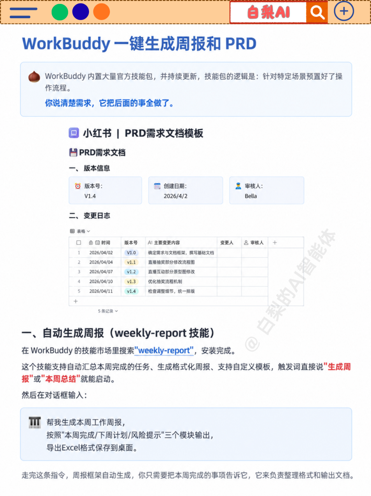
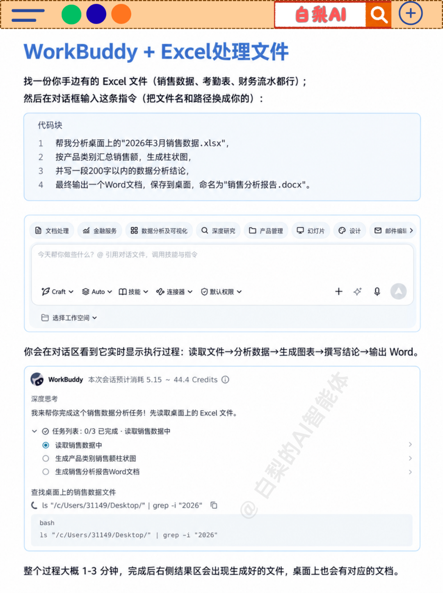
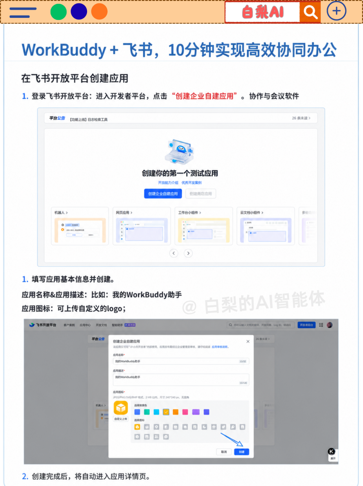
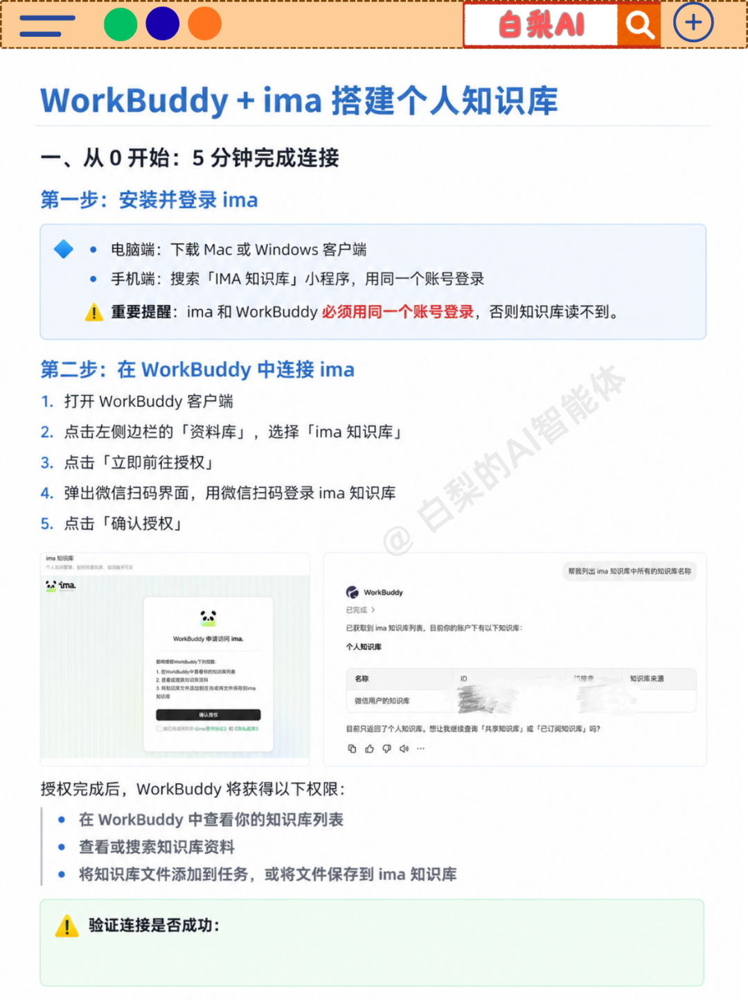
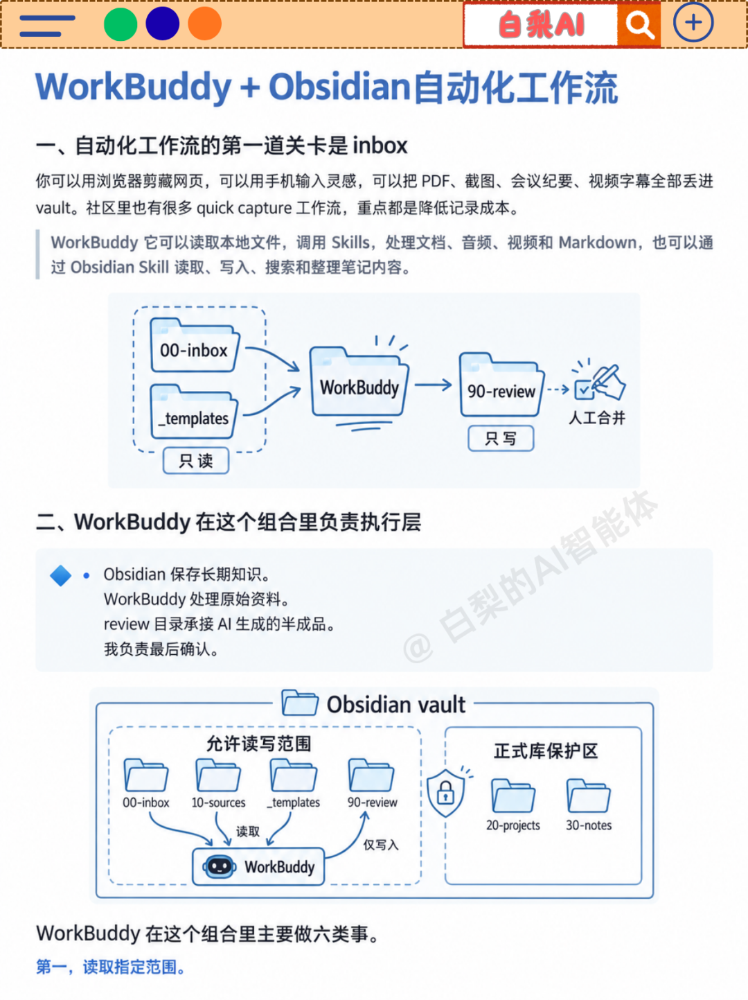
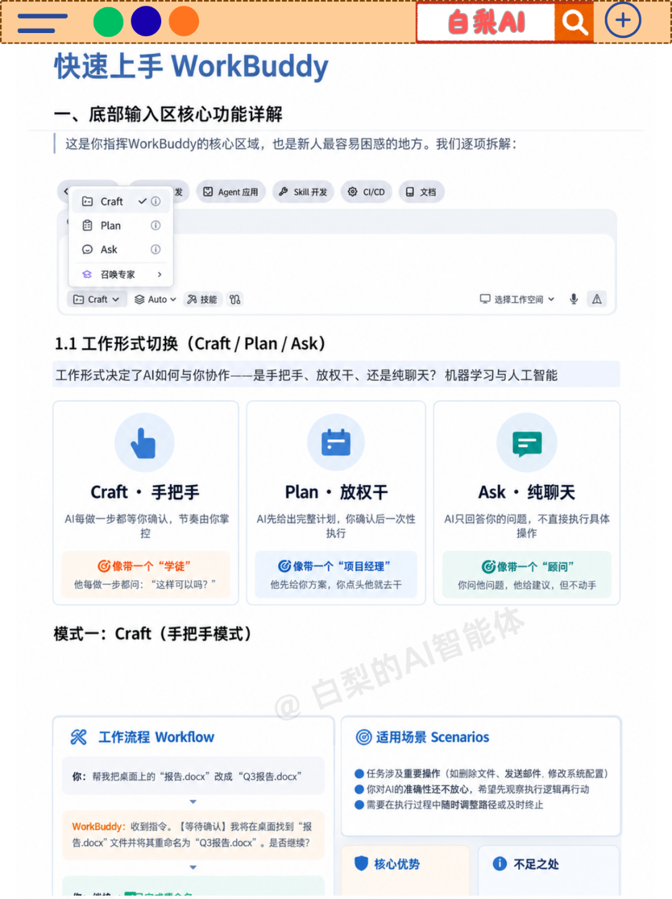
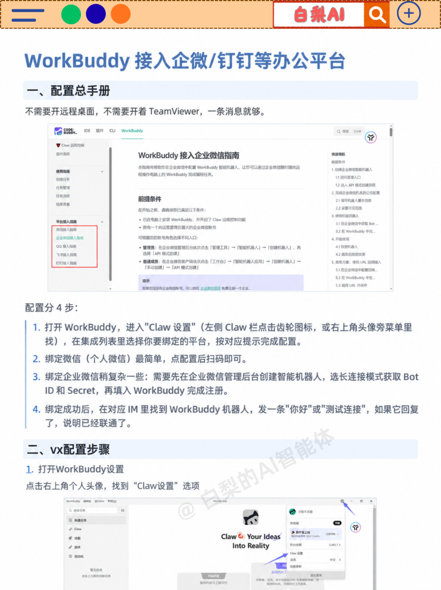
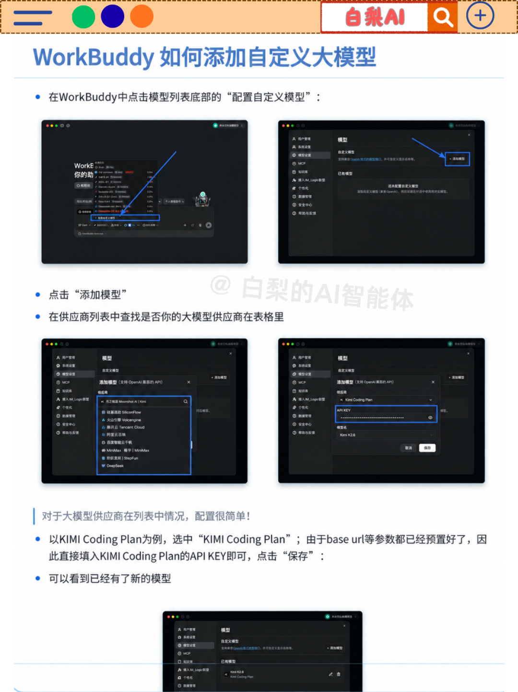